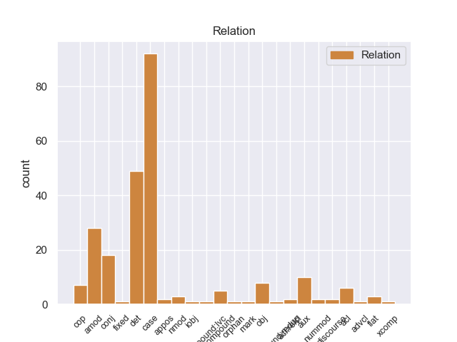
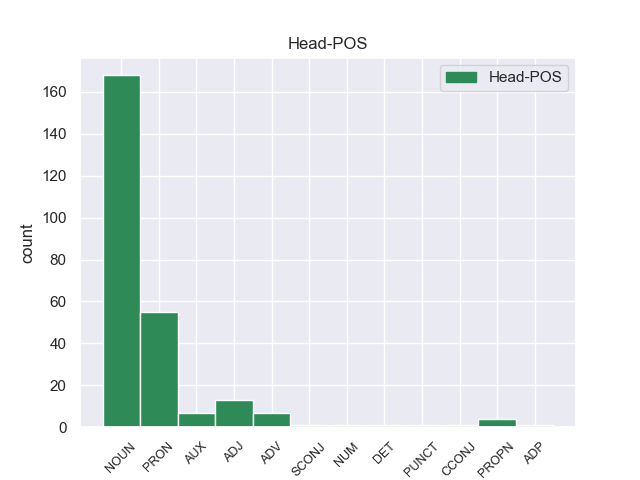
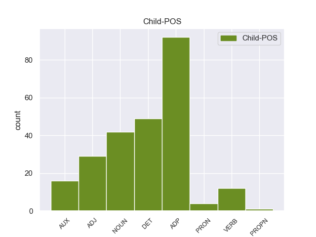

Distribution of features within this leaf



Morphosyntax Rules sorted by frequency.
- When the dependent token is the determiner(det) of the head token, and the head token is NOUN the Gender needs to be Masc.
1 _ तो DET _ Distance=Dist|Gender=Masc|Number=Sing|PronType=Dem 3 det _ _
2 None _ _ _ _ 0 _ _ _
3 आवाज आवाज NOUN _ Case=Nom|Gender=Masc|Number=Sing 0 _ _ _
4 परत _ _ _ _ 0 _ _ _
5 येत _ _ _ _ 0 _ _ _
6 आहे _ _ _ _ 0 _ _ _
7 ! _ _ _ _ 0 _ _ _
1 जेम्स _ _ _ _ 0 _ _ _
2 एक _ _ _ _ 0 _ _ _
3 लहान _ _ _ _ 0 _ _ _
4 मुलगा _ _ _ _ 0 _ _ _
5 आहे _ _ _ _ 0 _ _ _
6 आणि _ _ _ _ 0 _ _ _
7 तो _ _ _ _ 0 _ _ _
8 सहा _ _ _ _ 0 _ _ _
9 _ वर्ष NOUN _ Case=Obl|Gender=Neut|Number=Sing 0 _ _ _
10 _ चा ADP _ Gender=Masc|Number=Sing 9 case _ _
11 आहे _ _ _ _ 0 _ _ _
12 . _ _ _ _ 0 _ _ _
1 पलीकडे _ _ _ _ 0 _ _ _
2 _ तो PRON _ Distance=Dist|Gender=Masc|Number=Sing|Person=3 0 _ _ _
3 _ चा ADP _ Gender=Masc|Number=Sing 2 case _ _
4 लहानसा _ _ _ _ 0 _ _ _
5 गोठा _ _ _ _ 0 _ _ _
6 होता _ _ _ _ 0 _ _ _
7 . _ _ _ _ 0 _ _ _
1 खरोखरच _ _ _ _ 0 _ _ _
2 त्या _ _ _ _ 0 _ _ _
3 None _ _ _ _ 0 _ _ _
4 None _ _ _ _ 0 _ _ _
5 None _ _ _ _ 0 _ _ _
6 None _ _ _ _ 0 _ _ _
7 जीव जीव NOUN _ Case=Nom|Gender=Masc|Number=Sing 10 amod _ _
8 की _ _ _ _ 0 _ _ _
9 प्राण _ _ _ _ 0 _ _ _
10 प्रेम प्रेम NOUN _ Case=Nom|Gender=Neut|Number=Sing 0 _ _ _
11 होते _ _ _ _ 0 _ _ _
12 . _ _ _ _ 0 _ _ _
1 दादा _ _ _ _ 0 _ _ _
2 , _ _ _ _ 0 _ _ _
3 मी _ _ _ _ 0 _ _ _
4 साप साप NOUN _ Case=Acc|Gender=Masc|Number=Sing 0 _ _ _
5 होतो असणे AUX _ Gender=Masc|Number=Sing|Person=1|Tense=Past|VerbForm=Fin 4 cop _ SpaceAfter=No
6 . _ _ _ _ 0 _ _ _
1 इतक्यात _ _ _ _ 0 _ _ _
2 केविलवाणा केविलवाणा NOUN _ Case=Nom|Gender=Masc|Number=Sing 3 compound _ _
3 शब्द शब्द NOUN _ Case=Nom|Gender=Masc|Number=Sing 0 _ _ _
4 कानी _ _ _ _ 0 _ _ _
5 आला _ _ _ _ 0 _ _ _
6 . _ _ _ _ 0 _ _ _
1 खरोखरच _ _ _ _ 0 _ _ _
2 त्या _ _ _ _ 0 _ _ _
3 None _ _ _ _ 0 _ _ _
4 None _ _ _ _ 0 _ _ _
5 None _ _ _ _ 0 _ _ _
6 None _ _ _ _ 0 _ _ _
7 जीव जीव NOUN _ Case=Nom|Gender=Masc|Number=Sing 0 _ _ _
8 की _ _ _ _ 0 _ _ _
9 प्राण प्राण NOUN _ Case=Nom|Gender=Masc|Number=Sing 7 conj _ _
10 प्रेम _ _ _ _ 0 _ _ _
11 होते _ _ _ _ 0 _ _ _
12 . _ _ _ _ 0 _ _ _
1 ठीक _ _ _ _ 0 _ _ _
2 , _ _ _ _ 0 _ _ _
3 हरकत हरकत NOUN _ Case=Nom|Gender=Fem|Number=Sing 0 _ _ _
4 नाही _ _ _ _ 0 _ _ _
5 , _ _ _ _ 0 _ _ _
6 राजपुत्र _ _ _ _ 0 _ _ _
7 म्हणाला म्हणणे VERB _ Aspect=Perf|Gender=Masc|Number=Sing|Person=3|VerbForm=Fin 3 parataxis _ SpaceAfter=No
8 . _ _ _ _ 0 _ _ _
1 ठीक _ _ _ _ 0 _ _ _
2 आहे असणे AUX _ Number=Sing|Person=3|Tense=Pres|VerbForm=Fin 0 _ _ _
3 , _ _ _ _ 0 _ _ _
4 राजा _ _ _ _ 0 _ _ _
5 म्हणाला म्हणणे VERB _ Aspect=Perf|Gender=Masc|Number=Sing|Person=3|VerbForm=Fin 2 parataxis _ SpaceAfter=No
6 . _ _ _ _ 0 _ _ _
1 खुशमस्कऱ्या _ _ _ _ 0 _ _ _
2 None _ _ _ _ 0 _ _ _
3 None _ _ _ _ 0 _ _ _
4 गेला _ _ _ _ 0 _ _ _
5 व _ _ _ _ 0 _ _ _
6 म्हणाला _ _ _ _ 0 _ _ _
7 , _ _ _ _ 0 _ _ _
8 राजा _ _ _ _ 0 _ _ _
9 , _ _ _ _ 0 _ _ _
10 राजा राजा NOUN _ Case=Nom|Gender=Masc|Number=Sing 17 discourse _ SpaceAfter=No
11 , _ _ _ _ 0 _ _ _
12 त्या _ _ _ _ 0 _ _ _
13 None _ _ _ _ 0 _ _ _
14 None _ _ _ _ 0 _ _ _
15 बहीण _ _ _ _ 0 _ _ _
16 फार _ _ _ _ 0 _ _ _
17 सुंदर सुंदर ADJ _ Case=Nom 0 _ _ _
18 आहे _ _ _ _ 0 _ _ _
19 . _ _ _ _ 0 _ _ _
1 _ भीम PROPN _ Case=Obl|Gender=Masc|Number=Sing 0 _ _ _
2 _ चा ADP _ Gender=Masc|Number=Sing 1 case _ _
3 शब्द _ _ _ _ 0 _ _ _
4 None _ _ _ _ 0 _ _ _
5 None _ _ _ _ 0 _ _ _
6 None _ _ _ _ 0 _ _ _
7 None _ _ _ _ 0 _ _ _
8 गाय _ _ _ _ 0 _ _ _
9 हंबरायची _ _ _ _ 0 _ _ _
10 . _ _ _ _ 0 _ _ _
1 आज _ _ _ _ 0 _ _ _
2 मी _ _ _ _ 0 _ _ _
3 तुला _ _ _ _ 0 _ _ _
4 तू _ _ _ _ 0 _ _ _
5 मागशील _ _ _ _ 0 _ _ _
6 ती _ _ _ _ 0 _ _ _
7 किंमत _ _ _ _ 0 _ _ _
8 द्यायला _ _ _ _ 0 _ _ _
9 तयार तयार ADV _ _ 0 _ _ _
10 झालो _ _ _ _ 0 _ _ _
11 होतो असणे AUX _ Gender=Masc|Number=Sing|Person=1|Tense=Past|VerbForm=Fin 9 aux _ SpaceAfter=No
12 ; _ _ _ _ 0 _ _ _
13 परंतु _ _ _ _ 0 _ _ _
14 None _ _ _ _ 0 _ _ _
15 None _ _ _ _ 0 _ _ _
16 बुद्धी _ _ _ _ 0 _ _ _
17 भ्रष्ट _ _ _ _ 0 _ _ _
18 झाली _ _ _ _ 0 _ _ _
19 आहे _ _ _ _ 0 _ _ _
20 . _ _ _ _ 0 _ _ _
1 एकुलता _ _ _ _ 0 _ _ _
2 एक _ _ _ _ 0 _ _ _
3 मुलगा _ _ _ _ 0 _ _ _
4 म्हणून _ _ _ _ 0 _ _ _
5 राजा _ _ _ _ 0 _ _ _
6 - _ _ _ _ 0 _ _ _
7 राणी _ _ _ _ 0 _ _ _
8 त्याला _ _ _ _ 0 _ _ _
9 जीव जीव NOUN _ Case=Nom|Gender=Masc|Number=Sing 0 _ _ _
10 की _ _ _ _ 0 _ _ _
11 प्राण प्राण NOUN _ Case=Nom|Gender=Masc|Number=Sing 9 fixed _ _
12 करित _ _ _ _ 0 _ _ _
13 . _ _ _ _ 0 _ _ _
1 None _ _ _ _ 0 _ _ _
2 None _ _ _ _ 0 _ _ _
3 आज्ञा _ _ _ _ 0 _ _ _
4 प्रमाण _ _ _ _ 0 _ _ _
5 , _ _ _ _ 0 _ _ _
6 असे _ _ _ _ 0 _ _ _
7 म्हणून _ _ _ _ 0 _ _ _
8 _ पिता NOUN _ Case=Obl|Gender=Masc|Number=Sing 10 nmod _ _
9 None _ _ _ _ 0 _ _ _
10 पाया पाय NOUN _ Case=Loc|Gender=Masc|Number=Sing 0 _ _ _
11 पडून _ _ _ _ 0 _ _ _
12 तो _ _ _ _ 0 _ _ _
13 None _ _ _ _ 0 _ _ _
14 None _ _ _ _ 0 _ _ _
15 निरोप _ _ _ _ 0 _ _ _
16 घ्यायला _ _ _ _ 0 _ _ _
17 गेला _ _ _ _ 0 _ _ _
18 . _ _ _ _ 0 _ _ _
1 हे हा PRON _ Distance=Prox|Gender=Neut|Number=Sing|Person=3 0 _ _ _
2 घे _ _ _ _ 0 _ _ _
3 चार _ _ _ _ 0 _ _ _
4 लाडू लाडू NOUN _ Case=Nom|Gender=Masc|Number=Plur 1 appos _ _
5 . _ _ _ _ 0 _ _ _
1 त्या _ _ _ _ 0 _ _ _
2 None _ _ _ _ 0 _ _ _
3 None _ _ _ _ 0 _ _ _
4 त्याला तो PRON _ Case=Dat|Distance=Dist|Gender=Masc|Number=Sing|Person=3 6 iobj _ _
5 आठवण _ _ _ _ 0 _ _ _
6 झाली होणे AUX _ Aspect=Perf|Gender=Fem|Number=Sing|Person=3|VerbForm=Fin 0 _ _ _
7 . _ _ _ _ 0 _ _ _
1 अर्धा अर्धा ADJ _ Case=Nom|Gender=Masc|Number=Sing 2 compound:redup _ _
2 अर्धा अर्धा ADJ _ Case=Nom|Gender=Masc|Number=Sing 0 _ _ _
3 लाडू _ _ _ _ 0 _ _ _
4 दोघांनी _ _ _ _ 0 _ _ _
5 खाल्ला _ _ _ _ 0 _ _ _
6 . _ _ _ _ 0 _ _ _
1 तो तो DET _ Case=Nom|Distance=Prox|Gender=Masc|Number=Sing|PronType=Dem 3 det _ _
2 पाठीमागून _ _ _ _ 0 _ _ _
3 कोणी कोण PRON _ Case=Erg|PronType=Int 0 _ _ _
4 येत _ _ _ _ 0 _ _ _
5 आहे _ _ _ _ 0 _ _ _
6 असे _ _ _ _ 0 _ _ _
7 त्यांना _ _ _ _ 0 _ _ _
8 वाटले _ _ _ _ 0 _ _ _
9 . _ _ _ _ 0 _ _ _
1 None _ _ _ _ 0 _ _ _
2 None _ _ _ _ 0 _ _ _
3 एकटा एकटा ADJ _ Case=Nom|Gender=Masc|Number=Sing 4 amod _ _
4 का का ADV _ _ 0 _ _ _
5 ? _ _ _ _ 0 _ _ _
6 राजपुत्राने _ _ _ _ 0 _ _ _
7 विचारले _ _ _ _ 0 _ _ _
8 . _ _ _ _ 0 _ _ _
1 तो तो DET _ Case=Nom|Distance=Prox|Gender=Masc|Number=Sing|PronType=Dem 4 det _ _
2 आणखी _ _ _ _ 0 _ _ _
3 एक _ _ _ _ 0 _ _ _
4 तरुण तरुण ADJ _ Case=Nom 0 _ _ _
5 धावत _ _ _ _ 0 _ _ _
6 आला _ _ _ _ 0 _ _ _
7 . _ _ _ _ 0 _ _ _
1 दोन _ _ _ _ 0 _ _ _
2 लाडू _ _ _ _ 0 _ _ _
3 शिल्लक शिल्लक ADJ _ Case=Nom 0 _ _ _
4 होते असणे AUX _ Gender=Masc|Number=Plur|Person=3|Tense=Past|VerbForm=Fin 3 aux _ SpaceAfter=No
5 . _ _ _ _ 0 _ _ _
1 अर्धा अर्धा ADJ _ Case=Nom|Gender=Masc|Number=Sing 2 nummod _ _
2 लाडू लाडू NOUN _ Case=Acc|Gender=Masc|Number=Sing 0 _ _ _
3 सर्वांनी _ _ _ _ 0 _ _ _
4 खाल्ला _ _ _ _ 0 _ _ _
5 . _ _ _ _ 0 _ _ _
1 त्या _ _ _ _ 0 _ _ _
2 दोघा _ _ _ _ 0 _ _ _
3 भावांनी _ _ _ _ 0 _ _ _
4 घोडेस्वार _ _ _ _ 0 _ _ _
5 None _ _ _ _ 0 _ _ _
6 None _ _ _ _ 0 _ _ _
7 ठेवले _ _ _ _ 0 _ _ _
8 आणि _ _ _ _ 0 _ _ _
9 हत्ती हत्ती NOUN _ Case=Acc|Gender=Masc|Number=Plur 10 obj _ _
10 सजविला सजवी NOUN _ Case=Dat|Gender=Fem|Number=Sing 0 _ _ _
11 . _ _ _ _ 0 _ _ _
1 पाठवा _ _ _ _ 0 _ _ _
2 त्याला तो PRON _ Case=Dat|Distance=Dist|Gender=Masc|Number=Sing|Person=3 3 obj _ SpaceAfter=No
3 , , PUNCT _ _ 0 _ _ _
4 राजपुत्र _ _ _ _ 0 _ _ _
5 म्हणाला _ _ _ _ 0 _ _ _
6 . _ _ _ _ 0 _ _ _
1 राजाने _ _ _ _ 0 _ _ _
2 येऊ _ _ _ _ 0 _ _ _
3 दिले _ _ _ _ 0 _ _ _
4 तर तर CCONJ _ _ 0 _ _ _
5 ! _ _ _ _ 0 _ _ _
6 तो _ _ _ _ 0 _ _ _
7 म्हणाला म्हणणे VERB _ Aspect=Perf|Gender=Masc|Number=Sing|Person=3|VerbForm=Fin 4 parataxis _ SpaceAfter=No
8 . _ _ _ _ 0 _ _ _
1 मोती _ _ _ _ 0 _ _ _
2 अलग अलग ADJ _ Case=Nom 0 _ _ _
3 झाले होणे VERB _ Aspect=Perf|Gender=Masc|Number=Plur|Person=3|VerbForm=Fin 2 cop _ SpaceAfter=No
4 . _ _ _ _ 0 _ _ _
1 मी _ _ _ _ 0 _ _ _
2 देतो देणे VERB _ Aspect=Imp|Gender=Masc|Number=Sing|Person=1|Tense=Pres|VerbForm=Fin 4 acl _ _
3 तो _ _ _ _ 0 _ _ _
4 रस रस NOUN _ Case=Acc|Gender=Masc|Number=Sing 0 _ _ _
5 अंगाला _ _ _ _ 0 _ _ _
6 लावा _ _ _ _ 0 _ _ _
7 आणि _ _ _ _ 0 _ _ _
8 None _ _ _ _ 0 _ _ _
9 None _ _ _ _ 0 _ _ _
10 निजा _ _ _ _ 0 _ _ _
11 . _ _ _ _ 0 _ _ _
1 बरोबर _ _ _ _ 0 _ _ _
2 _ फराळ NOUN _ Case=Obl|Gender=Masc|Number=Sing 4 obj _ _
3 None _ _ _ _ 0 _ _ _
4 होते असणे AUX _ Gender=Neut|Number=Sing|Person=3|Tense=Past|VerbForm=Fin 0 _ _ _
5 . _ _ _ _ 0 _ _ _
1 आम्ही _ _ _ _ 0 _ _ _
2 None _ _ _ _ 0 _ _ _
3 None _ _ _ _ 0 _ _ _
4 केलेले करणे VERB _ Aspect=Perf|Gender=Masc|Number=Plur|Person=3|VerbForm=Part 5 advcl _ _
5 उपकार उपकार NOUN _ Case=Acc|Gender=Masc|Number=Plur 0 _ _ _
6 स्मरतो _ _ _ _ 0 _ _ _
7 . _ _ _ _ 0 _ _ _
1 _ असा ADJ _ Case=Nom|Gender=Masc|Number=Sing 3 amod _ _
2 None _ _ _ _ 0 _ _ _
3 दयाळू दयाळू ADJ _ Case=Nom 0 _ _ _
4 - _ _ _ _ 0 _ _ _
5 मायाळू _ _ _ _ 0 _ _ _
6 हो _ _ _ _ 0 _ _ _
7 ! _ _ _ _ 0 _ _ _
1 पशु पशु NOUN _ Case=Nom|Gender=Neut|Number=Sing 0 _ _ _
2 - _ _ _ _ 0 _ _ _
3 _ पक्ष NOUN _ Case=Loc|Gender=Masc|Number=Plur 1 flat _ _
4 None _ _ _ _ 0 _ _ _
5 केवढी _ _ _ _ 0 _ _ _
6 कृतज्ञताबुद्धी _ _ _ _ 0 _ _ _
7 ! _ _ _ _ 0 _ _ _
8 असे _ _ _ _ 0 _ _ _
9 None _ _ _ _ 0 _ _ _
10 None _ _ _ _ 0 _ _ _
11 मनात _ _ _ _ 0 _ _ _
12 येत _ _ _ _ 0 _ _ _
13 होते _ _ _ _ 0 _ _ _
14 . _ _ _ _ 0 _ _ _
1 मग _ _ _ _ 0 _ _ _
2 माणसाने _ _ _ _ 0 _ _ _
3 किती _ _ _ _ 0 _ _ _
4 चांगले चांगला ADJ _ Case=Nom|Gender=Neut|Number=Sing 0 _ _ _
5 असले _ _ _ _ 0 _ _ _
6 पाहिजे _ _ _ _ 0 _ _ _
7 , _ _ _ _ 0 _ _ _
8 असा _ _ _ _ 0 _ _ _
9 विचार _ _ _ _ 0 _ _ _
10 None _ _ _ _ 0 _ _ _
11 None _ _ _ _ 0 _ _ _
12 मनात _ _ _ _ 0 _ _ _
13 आला येणे VERB _ Aspect=Perf|Gender=Masc|Number=Sing|Person=3|VerbForm=Fin 4 parataxis _ _
14 आणि _ _ _ _ 0 _ _ _
15 या _ _ _ _ 0 _ _ _
16 विचारात _ _ _ _ 0 _ _ _
17 तो _ _ _ _ 0 _ _ _
18 None _ _ _ _ 0 _ _ _
19 None _ _ _ _ 0 _ _ _
20 घरी _ _ _ _ 0 _ _ _
21 आला _ _ _ _ 0 _ _ _
22 . _ _ _ _ 0 _ _ _
1 ती _ _ _ _ 0 _ _ _
2 अजून _ _ _ _ 0 _ _ _
3 जेम्सला _ _ _ _ 0 _ _ _
4 शोधायचा शोधणे VERB _ Gender=Masc|Mood=Des|Number=Sing|Person=3|VerbForm=Part 5 xcomp _ _
5 प्रयत्न प्रयत्न NOUN _ Case=Nom|Gender=Masc|Number=Sing 0 _ _ _
6 करत _ _ _ _ 0 _ _ _
7 आहे _ _ _ _ 0 _ _ _
8 . _ _ _ _ 0 _ _ _
1 पलीकडे पलीकडे ADP _ _ 0 _ _ _
2 None _ _ _ _ 0 _ _ _
3 None _ _ _ _ 0 _ _ _
4 लहानसा _ _ _ _ 0 _ _ _
5 गोठा _ _ _ _ 0 _ _ _
6 होता असणे AUX _ Gender=Masc|Number=Sing|Person=3|Tense=Past|VerbForm=Fin 1 aux _ SpaceAfter=No
7 . _ _ _ _ 0 _ _ _
non-conforming Examples:
1 एकुलता _ _ _ _ 0 _ _ _
2 एक _ _ _ _ 0 _ _ _
3 मुलगा _ _ _ _ 0 _ _ _
4 म्हणून _ _ _ _ 0 _ _ _
5 राजा राजा NOUN _ Case=Nom|Gender=Neut|Number=Sing 0 _ _ _
6 - _ _ _ _ 0 _ _ _
7 राणी राणी NOUN _ Case=Nom|Gender=Fem|Number=Sing 5 conj _ _
8 त्याला _ _ _ _ 0 _ _ _
9 जीव _ _ _ _ 0 _ _ _
10 की _ _ _ _ 0 _ _ _
11 प्राण _ _ _ _ 0 _ _ _
12 करित _ _ _ _ 0 _ _ _
13 . _ _ _ _ 0 _ _ _
1 " _ _ _ _ 0 _ _ _
2 आज _ _ _ _ 0 _ _ _
3 त्याला _ _ _ _ 0 _ _ _
4 हाकलून _ _ _ _ 0 _ _ _
5 देणे _ _ _ _ 0 _ _ _
6 तुला _ _ _ _ 0 _ _ _
7 _ कठोरपणा NOUN _ Case=Obl|Gender=Masc|Number=Sing 0 _ _ _
8 _ चा ADP _ Gender=Neut|Number=Sing 7 case _ _
9 वाटले _ _ _ _ 0 _ _ _
10 तरी _ _ _ _ 0 _ _ _
11 None _ _ _ _ 0 _ _ _
12 None _ _ _ _ 0 _ _ _
13 None _ _ _ _ 0 _ _ _
14 None _ _ _ _ 0 _ _ _
15 आहे _ _ _ _ 0 _ _ _
16 , _ _ _ _ 0 _ _ _
17 " _ _ _ _ 0 _ _ _
18 तो _ _ _ _ 0 _ _ _
19 म्हणाला _ _ _ _ 0 _ _ _
20 . _ _ _ _ 0 _ _ _
1 " _ _ _ _ 0 _ _ _
2 आज _ _ _ _ 0 _ _ _
3 त्याला _ _ _ _ 0 _ _ _
4 हाकलून _ _ _ _ 0 _ _ _
5 देणे _ _ _ _ 0 _ _ _
6 तुला _ _ _ _ 0 _ _ _
7 None _ _ _ _ 0 _ _ _
8 None _ _ _ _ 0 _ _ _
9 वाटले _ _ _ _ 0 _ _ _
10 तरी _ _ _ _ 0 _ _ _
11 None _ _ _ _ 0 _ _ _
12 None _ _ _ _ 0 _ _ _
13 _ हित NOUN _ Case=Obl|Gender=Neut|Number=Sing 0 _ _ _
14 _ चा ADP _ Gender=Neut|Number=Sing 13 case _ _
15 आहे _ _ _ _ 0 _ _ _
16 , _ _ _ _ 0 _ _ _
17 " _ _ _ _ 0 _ _ _
18 तो _ _ _ _ 0 _ _ _
19 म्हणाला _ _ _ _ 0 _ _ _
20 . _ _ _ _ 0 _ _ _
1 _ तू PRON _ Case=Obl|Number=Plur|Person=2 0 _ _ _
2 _ चा ADP _ Gender=Fem|Number=Sing 1 case _ _
3 आज्ञा _ _ _ _ 0 _ _ _
4 प्रमाण _ _ _ _ 0 _ _ _
5 , _ _ _ _ 0 _ _ _
6 असे _ _ _ _ 0 _ _ _
7 म्हणून _ _ _ _ 0 _ _ _
8 None _ _ _ _ 0 _ _ _
9 None _ _ _ _ 0 _ _ _
10 पाया _ _ _ _ 0 _ _ _
11 पडून _ _ _ _ 0 _ _ _
12 तो _ _ _ _ 0 _ _ _
13 None _ _ _ _ 0 _ _ _
14 None _ _ _ _ 0 _ _ _
15 निरोप _ _ _ _ 0 _ _ _
16 घ्यायला _ _ _ _ 0 _ _ _
17 गेला _ _ _ _ 0 _ _ _
18 . _ _ _ _ 0 _ _ _
1 None _ _ _ _ 0 _ _ _
2 None _ _ _ _ 0 _ _ _
3 आज्ञा _ _ _ _ 0 _ _ _
4 प्रमाण प्रमाण NOUN _ Case=Nom|Gender=Neut|Number=Sing 0 _ _ _
5 , _ _ _ _ 0 _ _ _
6 असे असा ADJ _ Case=Nom|Gender=Neut|Number=Sing 4 appos _ _
7 म्हणून _ _ _ _ 0 _ _ _
8 None _ _ _ _ 0 _ _ _
9 None _ _ _ _ 0 _ _ _
10 पाया _ _ _ _ 0 _ _ _
11 पडून _ _ _ _ 0 _ _ _
12 तो _ _ _ _ 0 _ _ _
13 None _ _ _ _ 0 _ _ _
14 None _ _ _ _ 0 _ _ _
15 निरोप _ _ _ _ 0 _ _ _
16 घ्यायला _ _ _ _ 0 _ _ _
17 गेला _ _ _ _ 0 _ _ _
18 . _ _ _ _ 0 _ _ _